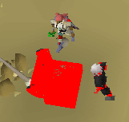
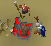
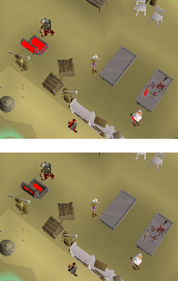
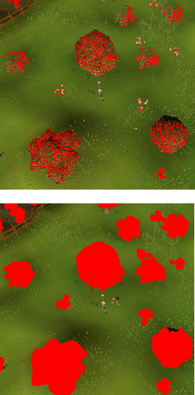
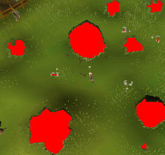
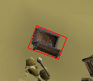

MainScreen¶
type TRSObjectFinder¶
TRSObjectFinder is the record used in MainScreen.FindObject.
TRSObjectFinder.Zoom
When designing a object finder you must be at default zoom(50) in the fixed client mode. This allows SRL to convert the finder to work at any zoom and client mode once made.

A finder working at different zoom levels producing similar results.¶
TRSObjectFinder.Colors
An color array which will searched for. Use ACA to acquire color(s).
Finder.Colors += CTS2(2503237, 20, 0.10, 0.14); // brown Finder.Colors += CTS2(5526875, 15, 0.19, 0.06); // grey
 The two colors above found and merged together.¶
TRSObjectFinder.ColorClusters
An array of “color clusters” which will be merged together. Use ACA to acquire color(s).
A “color cluster” consists of a primary and secondary color and a distance value. When searched for only primary colors within distance of secondary colors are returned.
Finder.ColorClusters += [ CTS2(2503237, 20, 0.10, 0.14), // brown CTS2(5526875, 15, 0.19, 0.06), // grey 2 // distance ];
 The above color cluster found where “brown” is within 2 pixels of “grey”.¶
TRSObjectFinder.Erode
The amount to erode before clustering. This is useful for removing small amounts of noise.
Finder.Erode := 2;
 Erode before and after.¶
TRSObjectFinder.Grow
The amount to grow before eroding. This is useful for filling gaps.
Finder.Grow := 2;
 Grow before and after.¶
Grow can also be paired with erode which is quite powerful.
Finder.Grow := 3; Finder.Erode := 4;
 Grow paired with Erode.¶
TRSObjectFinder.ClusterDistance
The distance to pass to ClusterTPA, this is how multiple objects are grouped up. Distance=5 would mean that points that are closer than or equal to 5 pixels away are considered close enough to merge into a singular group.
Finder.ClusterDistance := 5;

Cluster distance 5 produces four individual chairs¶
Finder.ClusterDistance := 20;

Cluster distance 20 produces two sets of chairs¶
TRSObjectFinder.MinLongSide, TRSObjectFinder.MaxLongSide, TRSObjectFinder.MinShortSide, TRSObjectFinder.MaxShortSide
Any match that exceeds these values will be removed. The bounding rectangle is used which has a long and a short side measured in pixels.
// Removes matches where the short side isn't within 10 and 20 pixels Finder.MinShortSide := 10; Finder.MaxShortSide := 20; // Removes matches where the long side isn't within 20 and 40 pixels Finder.MinLongSide := 20; Finder.MaxLongSide := 40; Example bounding rectangle with a long and short side.¶
MainScreen.Setup¶
procedure TRSMainScreen.Setup(ClientMode: ERSClientMode);
Setups the mainscreen.
Note
This is automatically called on the MainScreen variable.
MainScreen.GetUpText¶
function TRSMainScreen.GetUpText: String;
Returns the current uptext. Uptext is the top left which appears when moving the mouse over a object.
Example¶
WriteLn(MainScreen.GetUpText());
MainScreen.IsUpText¶
function TRSMainScreen.IsUpText(Text: TStringArray; Timeout: Int32 = -1): Boolean;
Returns true if the uptext is found anywhere in either of the Text strings.
Example¶
WriteLn(MainScreen.MainScreen.IsUpText(['Chicken', 'Wolf']));
MainScreen.IsUpText¶
function TRSMainScreen.IsUpText(Text: String; Timeout: Int32 = -1): Boolean;
Overloaded function that accepts a string rather than a TStringArray.
Example¶
WriteLn(MainScreen.IsUpText('Chicken'));
MainScreen.SetHighestPitch¶
procedure TRSMainScreen.SetHighestPitch;
Moves the camera to the highest pitch. There is no way to detect the camera pitch reliably using color, this is why SRL only provides this method.
Example¶
MainScreen.SetHighestPitch();
MainScreen.ConvertDistance¶
function TRSMainScreen.ConvertDistance(Dist: Int32; Accuracy: Single = 1.05): Int32;
Converts a distance acquired from the fixed client and default zoom(50) to the current mainscreen.
Example¶
// 20 pixels on the fixed client and default zoom(50) is currently x pixels on the mainscreen.
WriteLn(MainScreen.TranslateDistance(20));
MainScreen.GetPlayerBox¶
function TRSMainScreen.GetPlayerBox: TBox;
Returns a box surrounding our player. Works at any zoom level.
MainScreen.FacePoint¶
function TRSMainScreen.FacePoint(P: TPoint; Randomness: Int32 = 0): Boolean;
Rotates the camera to face point P.
Mainscreen.PointToMM¶
function TRSMainScreen.PointToMM(MS: TPoint; Height: Int32 = 0; Accuracy:Double = 0.2): Vector3;
Takes a mainscreen point and converts it to a point on the minimap.
Returns a Vector3 which includes input height. Conversion to a TPoint if that’s what you need is simply done by calling .ToPoint on the result.
Example¶
WriteLn Mainscreen.PointToMM(Point(250,140), 2); // as a vector (more accurate)
WriteLn Mainscreen.PointToMM(Point(250,140), 2).ToPoint(); // as a TPoint (lost accuracy)
Mainscreen.FindObject¶
function TRSMainScreen.FindObject(Finder: TRSObjectFinder; Area: TBox): T2DPointArray;
Returns all matches of an TRSObjectFinder in the desired area.
See the top of this page page for documentation about the TRSObjectFinder record.
Example¶
var MyFinder: TRSObjectFinder;
// Some chairs in varrock west bank
MyFinder.Colors += CTS2(1328725, 6, 0.06, 0.69);
MyFinder.ClusterDistance := 5;
MyFinder.Erode := 2;
MyFinder.MinLongSide := 10;
MyFinder.MaxLongSide := 15;
Debug(MainScreen.FindObject(MyFinder, MainScreen.Bounds()));
Mainscreen.FindObject¶
function TRSMainScreen.FindObject(Finder: TRSObjectFinder): T2DPointArray;
Overload which searches the entire MainScreen.
Example¶
Debug(MainScreen.FindObject(MyFinder));
Mainscreen.IsVisible¶
function TRSMainScreen.IsVisible(P: TPoint): Boolean;
Returns true if the TPoint is visible (not hidden by any other interfaces) on the mainscreen.
This is only useful in resizable mode. The interfaces checked are Chatbox, Minimap and Gametabs.
Example¶
if MainScreen.IsVisible([100, 100]) then
WriteLn('The point is not behind Chatbox, Minimap or Gametabs.');
type TRSHitsplat¶
type
TRSHitsplat = record
Position: TPoint; // Middle of the found hitsplat
Hit: Int32; // Hit amount
Red: Boolean; // True if red, false if blue.
end;
Mainscreen.FindHitsplats¶
function TRSMainScreen.FindHitsplats(Area: TBox): TRSHitsplatArray;
Finds hitsplats in the desired area. Returns an array of TRSHitsplat.
Example¶
var Splats: TRSHitsplatArray;
var I: Int32;
Splats := MainScreen.FindHitsplats(MainScreen.Bounds());
for I := 0 to High(Splats) do
WriteLn(Splats[I].Position);
Mainscreen.FindHitsplats¶
function TRSMainScreen.FindHitsplats(Area: TBox): TRSHitsplatArray;
Overload which finds hitsplats on the entire mainscreen.
type TRSHitsplat¶
type
TRSHPBar = record
Bounds: TBox; // Bounds of the bar
Percent: Extended; // Green percent of the bar.
end;
Mainscreen.FindHPBars¶
function TRSMainScreen.FindHPBars: TRSHPBarArray;
Finds hitpoints bars in the desired area. Returns an array of TRSHPBar.
Example¶
var Bars: TRSHPBarArray;
var I: Int32;
Bars := MainScreen.FindHPBars(MainScreen.Bounds());
for I := 0 to High(Bars) do
WriteLn(Bars[I].Percent, ' @ ', Bars[I].Bounds);
Mainscreen.FindHPBars¶
function TRSMainScreen.FindHPBars: TRSHPBarArray;
Overload which finds hp bars on the entire mainscreen.
Mainscreen.FindClick¶
function TRSMainScreen.FindClick(Area: TBox): ERSClickType;
Finds a click type in the desired area. Will return either:
RS_CLICK_NONE
RS_CLICK_RED
RS_CLICK_YELLOW
Example¶
if MainScreen.FindClick([50,50,100,100]) = RS_CLICK_RED then
WriteLn('Found a red click in 50,50,100,100');
Mainscreen.DidRedClick¶
function TRSMainScreen.DidRedClick: Boolean;
Returns true if a red click happened at the current mouse position.
Example¶
Mouse.Move(100, 100);
Mouse.Click(MOUSE_LEFT);
if MainScreen.DidRedClick() then
WriteLn('Red click!');
Mainscreen.DidYellowClick¶
function TRSMainScreen.DidYellowClick: Boolean;
Returns true if a yellow click happened at the current mouse position.
Example¶
Mouse.Move(100, 100);
Mouse.Click(MOUSE_LEFT);
if MainScreen.DidYellowClick() then
WriteLn('Yellow click!');